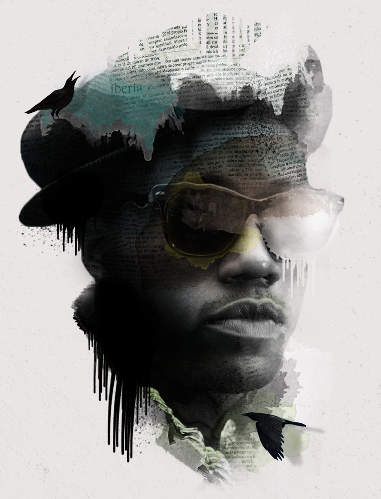
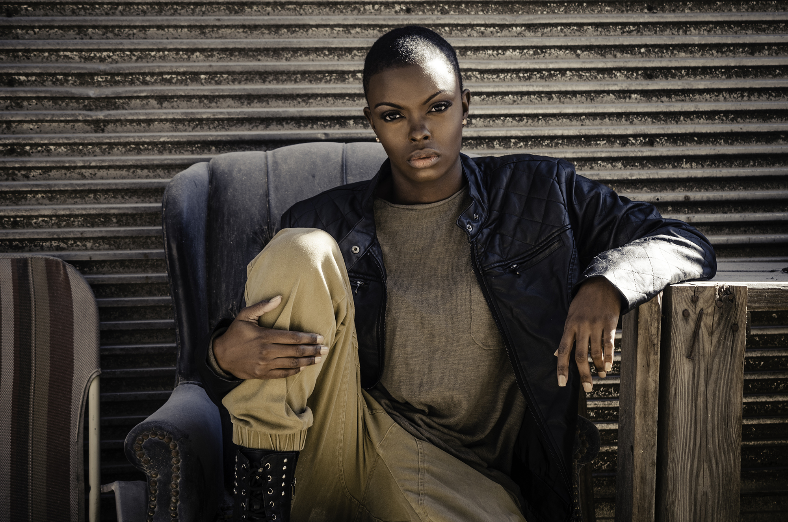
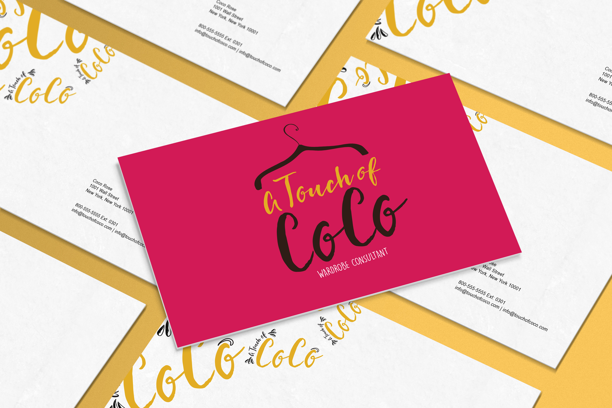
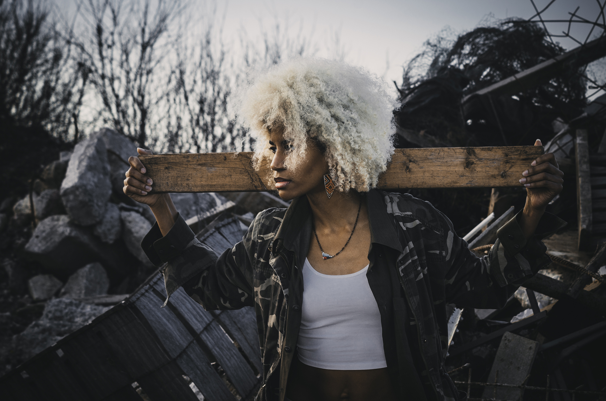

Short Bio
My name is Nitashia Johnson I graduated from Booker T. Washington High School for the Performing and Visual Arts in 2008 and went on to become a 2012 alumni of Texas Woman's University with my BFA that focuses on a concentration in design communication. I am a Graphic Designer at UT Dallas with an unwavering passion for art and photography. I'm also an alumni of the Master of Arts in Teaching (MAT) in Art + Design Education program at the Rhode Island School of Design. Part-time, I teach interactive design to college students at Texas Woman's University. Currently, I am working towards developing a community-based media arts program for High School teens in the inner city called The Smart Project. This after-school visual and media arts program will work with college mentors and high school students across North Texas.

How did you first get interested in design?
In Jr. high, I had an art teacher who advised me about this art high school for creative students called Booker T. Washington High School for the Performing and Visual Arts located in Dallas, Texas. She noticed my talents during my 7th-grade school year and begin helping me prepare for the auditions held there the following academic term.
I was quite the introvert in middle school. I would stay in her class during lunch and after-school to create art and avoid the other students, mainly because of personal issues. As we conversed during our time together, I began expressing myself to her, telling her about the struggles I faced at home and the hardships I endured from growing up without parents. Moved by my story she pushed me to work hard on my portfolio before the time of auditions. She even urged me to research some creative careers such as graphic design. I took her advice and did just that, from that moment on I knew that I wanted to pursue a career in design communication. I fell in love with designing and because of my drive and dedication, I was admitted into the school where I began working on my dreams.
What have been your biggest struggles of your career?
My biggest struggle working as a designer was trying to create with limited resources. For the first three years of my career, I didn't have the necessary equipment or programs needed to produce strong designs. I don't know how I did it, but I found a way to make it happen. Also, I wasn't confident in my work starting out but with the help of family and friends, I believe in myself now.
I think design could be more welcoming in its outreach to marginalized and underrepresented people. There isn't nearly enough exposure for young people in our communities interested in design early in life. So I think the field should work toward community outreach at a greater scale.

What are you doing that's special that sets you apart from your careers?
I am developing a community-based media arts program for High School teens in the inner city called The Smart Project. This after-school visual and media arts program will be dedicated to work with college and high school students across Dallas Fort-Worth. The program will use visual art, digital media, and technology as tools of preparation to ensure a future for young artists' through college access guidelines and a creative readiness framework. Students will tackle artistic projects that meet a set curriculum created by my non profit. It is quite different from anything I've done that's creative but I'm doing it to help students from the heart. It's special to me and I want to make this happen.
How can design be more accommodating to underrepresented populations of people?
I think design could be more welcoming in its outreach to marginalized and underrepresented people. There isn't nearly enough exposure for young people in our communities interested in design early in life. So I think the field should work toward community outreach at a greater scale. People in our communities should be introduced to design earlier in life by people in the field, which can sometimes seem very elitist from the outside looking in.
>I haven't experienced any vivid mishaps as a person of color in the industry yet but I have felt like it.
What have your experience been as a person of color in the design industry.
I haven't experienced any vivid mishaps as a person of color in the industry yet but I have felt like it. Most of the time it's hard to notice road blocks because things are done so indirectly, which makes it difficult to point out bad intentions or judgment. I will admit at a point in time I was nervous about going to creative interviews with my natural hair, people would always tell me the world wasn't ready for it yet. I accept people for who they are so it was hard hearing that. I got over that fast, those comments went in one ear and out the other. My personality shines bright so I just think of my hair as a crown for my intellectual mind.

What do you love most about working in design?
I love the ability to be able to create things that serve a purpose. I feel that design is the way of the world, it's how we communicate and that is quite extraordinary when you think about it.
What would you like to see changed about the design field?
I would love to see more young creatives branch out and create their own avenues. Sometimes it's hard finding work because it could very well so be about who you know. If you are an independent designer, you could be your own boss.
How can design be more accommodating to underrepresented populations of people?
I feel that the world of design could aim towards showcasing digital artists from a variety of different cultural groups.

What are you working on right now, either for work or for yourself?
I'm currently working towards developing a community-based after school media arts program for High School teens in the inner city called The Smart Project. I'm also creating a book to combat colorism, racism, and sexism using 14 - 20 women of color.
What advice would you give to folks from similar backgrounds who are in design or hoping to get into it?
Do it, if you love it go for it! If something isn't working out find a way to make it work. Have confidence in everything you do. You are awesome and the world needs a driven designer like you.